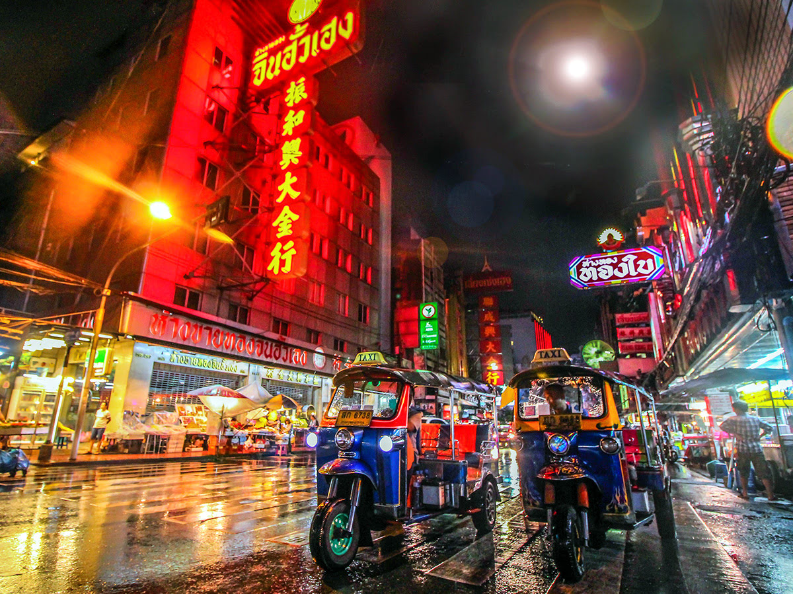

3 เยาวราช
เช่นเดียวกับเมืองใหญ่ๆ กรุงเทพ มี “ไชน่าทาวน์” หรือ เยาวราช ที่เป็นจุดท่องเที่ยวยอดนิยมสำหรับนักชิมที่กำลังมองหาอาหารจีนและอาหารไทยที่ดีที่สุดในเมือง นักชิมที่ต้องการหาติ่มซำหรือก๋วยเตี๋ยวประเภทใดก็ตาม ควรมุ่งหน้าไปที่ ถนนเยาวราช ส่วนใครอยากกินขนมหวานหลังอาหารค่ำ เยาวราช ก็มีร้านมากมายให้เลือกเช่นกัน นอกจากของอร่อยใน เยาวราช แล้ว อย่าลืมไปเยือน วัดมังกรกมลาวาส วัดพุทธที่ใหญ่ที่สุดและสำคัญที่สุดแห่งหนึ่งของ กรุงเทพ ประตูจีน และ สวนรมณีนาถ คือที่เที่ยวอีกสองแห่งใน เยาวราช ที่ไม่ควรพลาด และที่ไม่พูดถึงไม่ได้คือร้านขายทองต่างๆ มากมายในย่านนี้